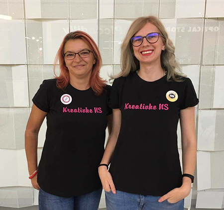
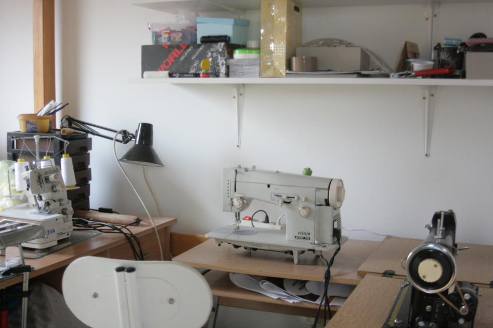

O MENI
Kažu da se velike stvari dešavaju sasvim slučajno. Tako je bilo i sa mojom svaštaonicom. Kako sam uvek volela sve sama da napravim i isprobam, tako sam i ušla u kreativni svet. Isprobavala sam razne tehnike i materijale, ali ipak moja prva ljubav bilo je šivenje. Što i nije toliko slučajno, jer je moj deda bio krojač i modni dizajner u to vreme. Nažalost umro je kada sam ja bila mala pa nisam mogla da učim od njega, ali snašla sam se i učila sa raznih strana.
Kada nemaš mira, i želiš da menjaš stvari, pri tom naiđeš na istomišljenike nastanu one dobre stvari i događaji- udruženje Kreativke NS i Mali sajam lepih stvari.
Posle mnogih lutanja, truda i odricanja, posle ubeđivanja sa drugim ljudima da to što radiš nije glupost i zamajavanje, posle dugih 8 godina, slobodno mogu reći da sam svoj hobi pretvorila u posao.
Tako danas imam svoju radionicu- Biljina svaštaonica ( Biljina HOBBY svaštaonica ), sa drugaricom Elom Martinović vodim udruženje Kreativke NS i naš sajam rukotvorina koji smo nazvali Mali sajam lepih stvari, koji se održava jednom mesečno. Takođe vodim i naš Kreativni prostor, gde se osim naših radova mogu pronaći i radovi drugih kreativaca.

Svi oni koji misle da je nešto lako napraviti- da, u pravu su! Lako je nešto napraviti, ali treba razmišljati i o radnjama koje prate pravljenje tog proizvoda. Recimo krećemo od ideje.
Potrebno je razvijati ideju, isprobavati i menjati model, materijale i tehnike. Kad si konačno zadovoljan finalnim proizvodom, treba sve to slikati, obraditi fotografije, postaviti ih na internet, izreklamirati, prodati, spakovati i poslati…
U suštini, vi niste samo kreativac, vi ste i fotograf , grafički i web dizajner, PR menadžer, sekretarica, potrčko, dostavljač. I tek onda kad vam nije teško da sve to uradite, znate da to radite iz ljubavi.
Ponekad ti je potrebna i pomoć drugih ljudi. Na sreću moji roditelji su prepoznali moj trud, i rado mi pomažu. Tako je tata zadužen za sito štampu, a mama za razna seckanja i detalje.
Nije lako, ali treba biti uporan i raditi na svom cilju, grabiti napred. Nije dovoljno biti samo kreativan, potrebno je biti i uporan.
Tako se ja trudim da iz moje radionice izađu samo kvalitetni proizvodi. Trudim se da proizvod dugo traje, zato koristim samo kvalitetne materijale, i cilj mi je da svi koji vole rukotvorine iz moje svaštaonice budu zadovoljni.
